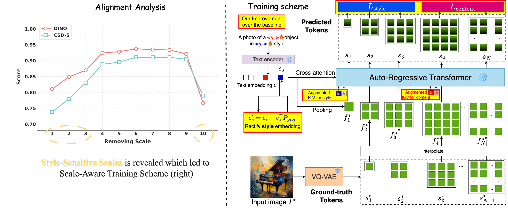

Disentangling content and style from a single image, known as content-style decomposition (CSD), enables recontextualization of extracted content and stylization of extracted styles, offering greater creative flexibility in visual synthesis. While recent personalization methods have explored explicit content-style decomposition, they remain tailored for diffusion models. Meanwhile, Visual Autoregressive Modeling (VAR) has emerged as a promising alternative with a next-scale prediction paradigm, achieving performance on par with diffusion models. In this paper, we explore VAR as a generative framework for CSD, leveraging its scale-wise generation process for improved disentanglement. To this end, we propose CSD-VAR, a novel method that introduces three key innovations: (1) a scale-aware alternating optimization strategy that aligns content and style representation with their respective scales to enhance separation, (2) an SVD-based rectification method to mitigate content leakage into style representations, and (3) Augmented Key-Value (K-V) memory enhancing content identity preservation. To benchmark this task, we introduce CSD-100, a dataset specifically designed for content-style decomposition, featuring diverse subjects rendered in various artistic styles. Experiments demonstrate that CSD-VAR outperforms prior approaches, achieving superior content preservation and stylization fidelity.
To standardize the evaluation of the content-style decomposition (CSD) task, we introduce CSD-100, a dataset of 100 images designed to capture diverse content and styles for comprehensive benchmark.
Given an input image $I^*$ containing a subject $y_c$ in style $y_s$, our objective is to disentangle its style and content into two distinct representations, enabling the generation of separate images: $I_c$, which accurately preserves the content of $I^*$, and $I_s$, which effectively captures its style. To achieve this, we explore the use of Visual Autoregressive Models (VAR) for this task.
Feel free to contact Quang-Binh Nguyen at binhnq@qti.qualcomm.com for any question. If you find this work useful, please consider citing:
@InProceedings{Nguyen_2025_ICCV,
author = {Nguyen, Quang-Binh and Luu, Minh and Nguyen, Quang and Tran, Anh and Nguyen, Khoi},
title = {CSD-VAR: Content-Style Decomposition in Visual Autoregressive Models},
booktitle = {Proceedings of the IEEE/CVF International Conference on Computer Vision (ICCV)},
month = {October},
year = {2025},
pages = {17013-17023}
}